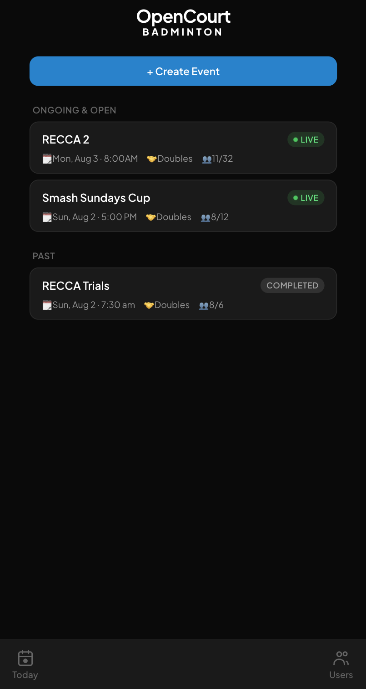
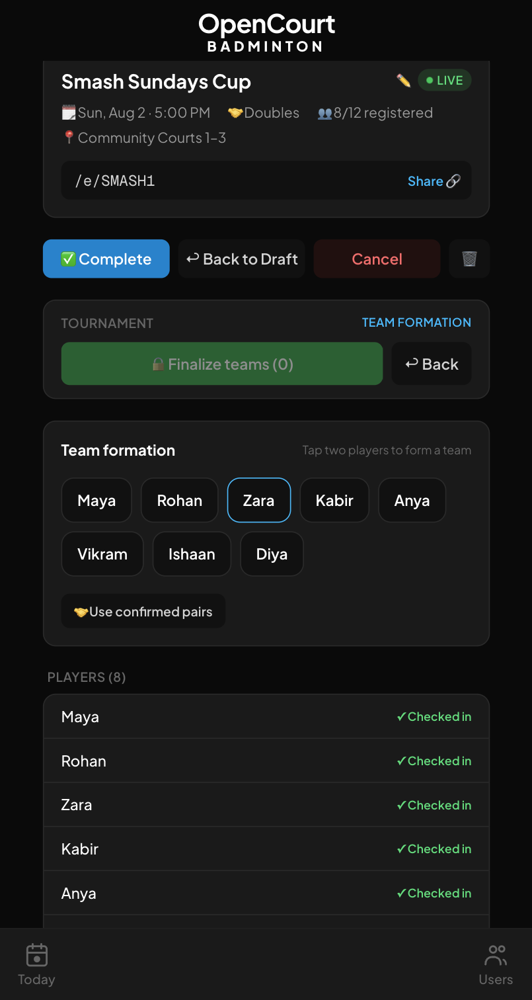
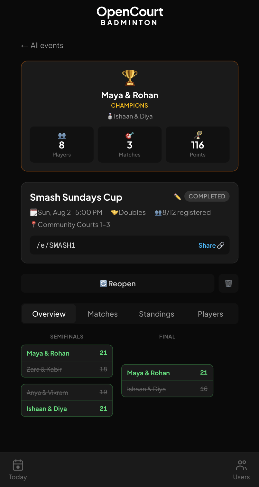

For the person who runs the club night. Create an event, drop the short link in the group chat, tap players into teams, and score the whole bracket from courtside on a phone.
A club tournament usually runs on a shared spreadsheet, a photo of a whiteboard, and forty messages asking who is actually playing. The names were free text, the schedule link is dead by Tuesday, and nobody can remember who they played in the group stage last month.
Open Court gives each event a short URL like /e/SMASH1. Players register and check in through it, an admin taps two names to make a team, picks a format, and the app generates the matches. Scores flow through the bracket. The player rows stay put for the next tournament.
How Open Court compares with the two kinds of tool club players already use
Link-and-go schedulers
Rating-platform apps
Open Court
Set up and share in minutes
Yes
No
Yes — links like /e/SMASH1
Players persist between tournaments
No
Yes
Yes
Works when half the crowd won't sign up
Yes
No
Yes — admins add players by name
Fixed-pair teams
No
Partly
Yes — tap two players
Formats that suit six teams
No
No
Yes — fixed rounds plus playoffs
Ads
Yes
—
Never
Two tools already exist for club badminton: the anonymous scheduler you share once and lose, and the rating platform that wants everyone to make an account first. The README names the specific ones and explains why neither fit a six-team club night.
Tour
One night, four screens
Events
Every event in one list
Ongoing and open events sit at the top, finished ones below. Each card carries the date, singles or doubles, and how many of the maximum places are taken. More than one tournament can be live at the same time.
A LIVE badge while an event is running
Registered-of-maximum on every card
Create Event is the first thing on screen

/events
Teams
Tap two names, done
Team formation is the whole screen. Tap a player, tap their partner, that is a team. Players who already confirmed each other as doubles partners can be pulled in with one button. Finalise the lineup in a single save.
Only checked-in players are offered
Use confirmed pairs in one tap
Share link lives on the event card

/e/SMASH1 · Team formation
Bracket
Winners advance themselves
Pick one of five formats and the matches generate. Enter a score at courtside and the winning pair moves into the next round on its own. A progress bar counts how many matches are done, so nobody has to ask.
A completed event opens on a trophy banner: champions, runners-up, and the totals for players, matches and points. The finished bracket stays underneath with every score. Reopen it if something was entered wrong.
Champions and runners-up named on top
Player, match and point totals
The event stays readable after the night ends

/e/SMASH1 · Completed
How it works
From group chat to champions
The order an organiser actually does it in, from an empty event to a trophy banner.
01
Create the event
Date, singles or doubles, maximum players, and an optional check-in window. The event gets a short URL you can paste straight into the group chat.
02
Register and check in
Players sign in with Google and register themselves; anyone past the maximum lands on a waitlist. Admins paste in names for the people who never will.
03
Form teams, pick a format
Tap two checked-in players into a team, finalise the lineup, choose one of five formats, and the app generates the match list.
04
Score it courtside
Enter scores on a phone between games. Winners advance, standings recalculate, and the finished event keeps its champions and its bracket.
Features
What's actually in it
Short share links
Every event gets a URL like /e/SMASH1 that survives the login redirect, so a tap in WhatsApp lands on the right page.
Players that persist
Player records carry across tournaments, so next month's event starts with the people who turned up to this one.
Automatic waitlists
Registrations past the maximum player count go to a waitlist computed from sign-up order, not from who shouted loudest.
Bulk player add
Admins paste a list of names to create players in one go, for the crowd that is never going to make an account.
Confirmed doubles pairs
Two players can confirm each other as partners, and team formation pulls every confirmed pair in with one button.
Five match formats
Groups plus knockout, fixed rounds, round robin, single elimination, or fully manual — chosen per event, not per app.
Standings and results
Team standings with points difference, a results matrix, and the bracket view, all tabs on the same event page.
Skill ratings, admin-only
Players carry a one-to-five skill level that only admins can see, so tapping teams together in front of everyone stays bias-free.
Installs like an app
It ships a web manifest and registers a service worker, so you can add it to a home screen and run it full-screen.
Built with
The stack, and where the data lives
Next.js 16
React 19
TypeScript
Tailwind CSS 4
Supabase Postgres
Supabase Auth
Vercel
Events, players, teams and scores live in a Supabase Postgres database; sign-in is Google through Supabase Auth. Hosting is Vercel, where Vercel Analytics and Speed Insights are switched on. No ORM, no component library, no ads, nothing sold on.
FAQ
Reasonable questions
Is it free?
Yes, and there are no ads. It runs on the Vercel and Supabase free tiers. Nobody is charged to create an event, register for one, or play in it.
Do I need an account?
To register yourself, yes — Google sign-in. If you would rather not, an admin can add you by name, and the profile links up if you ever do log in with that email.
Where does my data go?
A Supabase Postgres database, with authentication handled by Supabase. The site itself runs Vercel Analytics and Speed Insights. No ads, no third-party trackers, nothing sold.
Does it work on a phone?
It was built for one — everything above was shot on a phone. It ships a web manifest and a service worker, so you can add it to your home screen and it opens full-screen.
Can I run my own copy?
The repo is public. You need a Supabase project with the migrations in supabase/migrations/ applied and Google OAuth configured; after that it is a git push to Vercel.